Google est de retour ! Et son nouveau Gemini 4 Argon pourrait bien donner du fil à retordre à Claude. Mais est-il vraiment à la hauteur de sa réputation ?
Interface & Outils : Interface de chat Gemini Advanced.
Contenu textuel & Code : Prompt utilisateur demandant une recette de cuisine originale et réponse générée par l'IA.
Action / Démonstration : Affichage d'un exemple de conversation avec l'assistant IA Gemini.
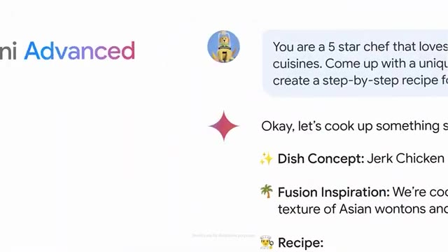
🔍 AgrandirNous avons testé les deux sur des tâches du monde réel. À la fin, vous verrez lequel a obtenu de meilleurs résultats et comment essayer Gemini vous-même. Pendant ce temps, Mark Zuckerberg vient de faire un pas majeur vers la superintelligence personnelle. Notre vision est de construire une superintelligence personnelle pour tout le monde. Le nouveau Muse Wonder de Meta peut se souvenir de ce qui compte pour vous et est conçu pour travailler à la réalisation de vos objectifs pendant des mois, même lorsque vous ne l'utilisez pas.
Interface & Outils : Interface de développement et de code (type IDE ou outil de prompt).
Contenu textuel & Code : Texte technique et instructions de code pour un projet "Cyber-Dino".
Action / Démonstration : Affichage d'un environnement de travail logiciel avec du code et des révisions.
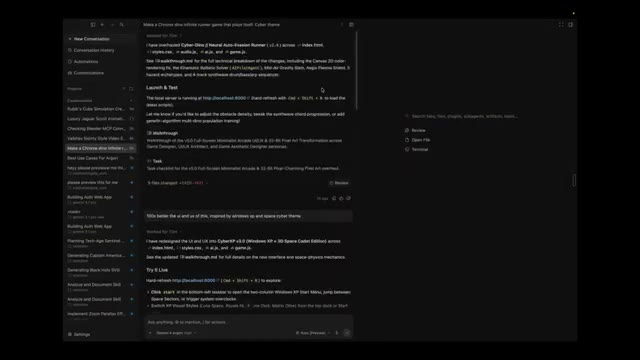
🔍 AgrandirEt OpenAI vient de changer la façon dont ChatGPT fonctionne. Au lieu de vous donner de longues réponses écrites, GPT-6 peut désormais créer des visuels interactifs que vous pouvez réellement utiliser. Mais alors que les entreprises se livrent une course pour créer une IA plus intelligente, Anthropic a surpris d'autres laboratoires d'IA en train d'utiliser Claude pour améliorer leurs propres modèles. Et la riposte s'organise.
Interface & Outils : Application mobile interactive sur smartphone (iOS/Android).
Contenu textuel & Code : Carte interactive de San Francisco, sections de voyage, images miniatures et texte descriptif de destinations.
Action / Démonstration : Présentation d'une interface mobile interactive générée par IA pour planifier un voyage.
Ce ne sont là que quatre des douze plus grandes actualités sur l'IA de cette semaine. Et à la fin, nous mettrons à l'épreuve les plus grandes affirmations de Google et nous vous montrerons exactement comment utiliser Gemini 4 Argon vous-même, étape par étape. Comme toujours, si une section devient trop technique, vous pouvez passer directement à la mise à jour suivante qui vous intéresse. Tout est horodaté dans la description.
Interface & Outils : Interface logicielle de type tableau de bord avec graphiques en pixel art.
Contenu textuel & Code : Visuel de ville futuriste en style rétro pixel art avec graphiques et barres de données latérales.
Action / Démonstration : Affichage d'une interface logicielle ou d'un outil visuel à l'écran pendant la présentation.
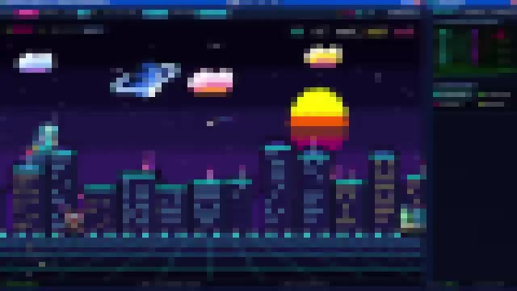
🔍 AgrandirJ'ai également mis tous les invites, les outils et les ressources utiles dans notre communauté WhatsApp gratuite. Le lien est dans la description. Maintenant, entrons dans le vif du sujet. Google vient de rendre son modèle d'IA le plus avancé pour le raisonnement complexe disponible dans le monde entier. Il s'appelle Gemini 4 Argon et il est doté d'une immense fenêtre de contexte d'un million de jetons.
Interface & Outils : Non applicable
Contenu textuel & Code : Texte 'Join the Global AI Community', 'Staying Ahead Club', et 'Gemini 4 Argon'
Action / Démonstration : Transition graphique et présentation du titre Gemini 4 Argon
Vous pouvez l'utiliser pour analyser des documents complexes, améliorer votre code, créer des visualisations 3D et même transformer vos idées en expériences interactives. Et le meilleur, c'est que Gemini 4 Argon est désormais disponible via l'application Gemini, Google Search, Google Anti-Gravity et l'API Gemini selon votre forfait.
Interface & Outils : Interface de recherche Google et visualisations graphiques 3D.
Contenu textuel & Code : Logos de recherche Google et illustrations visuelles 3D abstraites.
Action / Démonstration : Présentation des capacités visuelles et de recherche des fonctionnalités de l'IA.
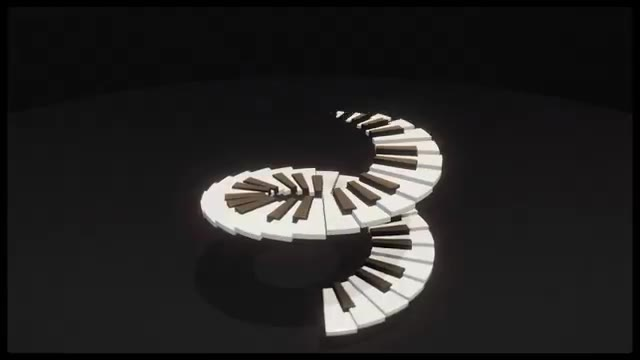
🔍 Agrandir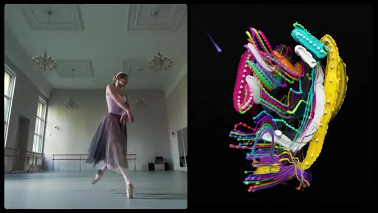
🔍 Agrandir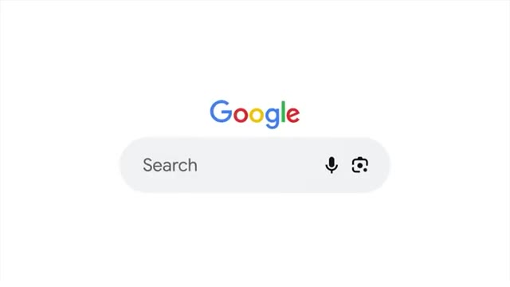
🔍 AgrandirMaintenant, nous avons été tellement impressionnés par ce que ce modèle peut faire que nous avons décidé de le tester nous-mêmes. Et plus tard dans cette vidéo, nous vous montrerons exactement comment l'utiliser avec un tutoriel complet étape par étape. Mais avant d'en arriver là, passons en revue les autres plus grandes actualités IA de la semaine. Meta vient de lancer Muse Wonder, son modèle d'IA le plus puissant à ce jour.
Interface & Outils : Aucune interface logicielle ou outil d'IA présenté dans ce segment.
Contenu textuel & Code : Aucun prompt, code ou donnée chiffrée affichés.
Action / Démonstration : Le présentateur s'adresse directement à la caméra pour introduire le sujet et annoncer un tutoriel.
Et l'objectif est de construire un assistant IA qui comprend votre vie, se souvient de ce qui compte pour vous et vous aide à accomplir vos tâches. L'une de ses plus grandes fonctionnalités est la mémoire active, ce qui signifie que vous n'avez pas besoin de tout réexpliquer depuis le début à chaque fois. Par exemple, si votre machine à laver tombe en panne, vous pouvez demander à Muse Wonder de trouver votre garantie et de vous aider à déposer une réclamation.
Interface & Outils : AUCUNE
Contenu textuel & Code : AUCUNE
Action / Démonstration : AUCUNE
Ou si vous aidez votre père à se remettre d'une chirurgie du genou, cela peut vous aider à suivre son calendrier de rétablissement. Et puis il y a la concentration active. Lorsque vous confiez à Muse Wonder une tâche difficile, il est conçu pour continuer à chercher des solutions, même lorsqu'il rencontre des problèmes. Meta affirme qu'il peut même continuer à travailler pour atteindre vos objectifs en arrière-plan pendant des jours, des semaines ou des mois.
Interface & Outils : AUCUNE
Contenu textuel & Code : AUCUNE
Action / Démonstration : AUCUNE
Et c'est la plus grande vision de Meta, une super intelligence personnelle pour tout le monde. Une IA qui se souvient de ce qui compte pour vous et vous aide à atteindre vos objectifs. OpenAI vient de changer la façon dont ChatGPT répond à vos questions. Il a lancé GPT-6 avec une nouvelle fonctionnalité appelée IU intelligente. Et maintenant, ChatGPT peut vous montrer des visuels interactifs au lieu de vous donner seulement de longs paragraphes de texte.
Interface & Outils : Interface graphique animée de type présentation/vidéo liée à ChatGPT.
Contenu textuel & Code : Texte 'ChatG' au centre entouré d'icônes variées (logo OpenAI, vélos, pinceau, nuages, palettes de couleurs).
Action / Démonstration : Animation graphique introduisant le sujet de ChatGPT et GPT-6 avec divers visuels.
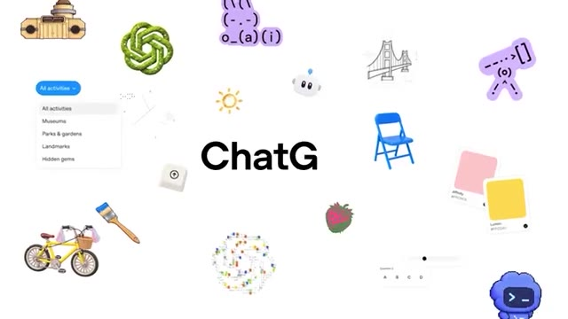
🔍 AgrandirPar exemple, imaginez que vous essayez d'assembler un vélo. Au lieu de parcourir un manuel d'instructions compliqué, ChatGPT peut vous montrer un modèle 3D interactif afin que vous puissiez voir exactement comment les différentes pièces s'assemblent. Ou disons que vous explorez San Francisco. ChatGPT peut vous montrer une carte interactive avec des endroits que vous pouvez visiter.
Interface & Outils : Application mobile sur smartphone (ChatGPT ou interface similaire)
Contenu textuel & Code : Modèle 3D interactif d'un vélo et guide interactif de San Francisco avec cartes et photos.
Action / Démonstration : Démonstration de l'utilisation de l'IA pour afficher des instructions interactives et des guides de voyage.
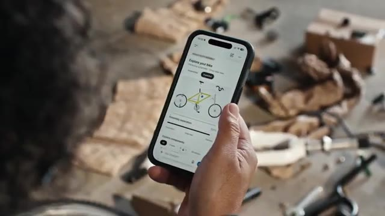
🔍 AgrandirVous pouvez même prévisualiser différentes couleurs de peinture sur vos murs avant de peindre réellement votre pièce. Et regardez ceci, ChatGPT peut également vous guider dans la fabrication d'un renard en origami avec des animations étape par étape au lieu de simples instructions écrites et cela va au-delà du visuel. ChatGPT peut désormais créer des outils interactifs tels que des calculateurs, des graphiques et des boutons directement dans votre conversation. Il y a une autre amélioration utile. GPT-4 peut désormais commencer à vous montrer une réponse pendant qu'il travaille encore sur votre question afin que vous n'ayez pas à attendre toute la réponse et cela se déploie
Interface & Outils : Application ou assistant virtuel avec interface textuelle et visuelle d'origami.
Contenu textuel & Code : Texte à l'écran : "Let's fold an origami baby fox!".
Action / Démonstration : Démonstration visuelle d'une personne guidée pour fabriquer un renard en origami.
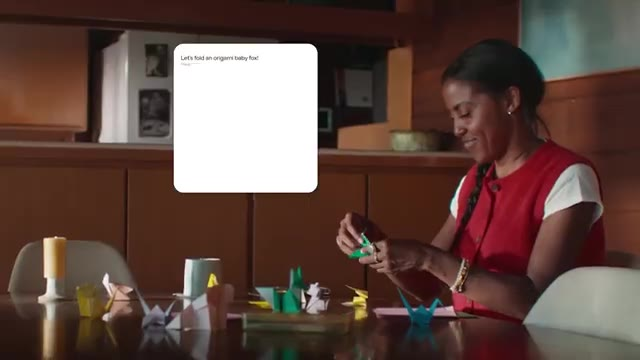
🔍 Agrandirà tout le monde, y compris aux utilisateurs gratuits. Donc au lieu de simplement lire les réponses de ChatGPT, vous pouvez désormais interagir avec elles et voir concrètement comment les choses fonctionnent. Anthropic vient de surprendre des entreprises d'IA en train d'utiliser Claude pour rendre leurs propres modèles plus intelligents. Elle a identifié une activité impliquant les entreprises d'IA chinoises Z.AI et Moonshot, qui utilisaient les capacités de Claude pour améliorer leurs propres modèles d'IA.
Interface & Outils : Application X (anciennement Twitter).
Contenu textuel & Code : Texte du tweet de Vaibhav Sisinty détaillant l'actualité sur Anthropic et la citation d'un tweet officiel d'Anthropic.
Action / Démonstration : Affichage d'un article ou d'un tweet d'actualité illustrant les propos du présentateur.
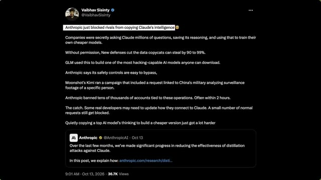
🔍 AgrandirCette technique est connue sous le nom d'attaque par distillation. Maintenant, Anthropic a introduit de nouvelles mesures de protection pour empêcher cela. Et voici ce qui est intéressant, selon Anthropic, ces défenses ont réduit la quantité d'informations que les attaquants peuvent extraire de 90 à 99 %. Anthropic a également banni des dizaines de milliers de comptes liés à ces attaques.
Interface & Outils : Navigateur web / Application X (Twitter)
Contenu textuel & Code : Texte d'un post expliquant la réduction de 90 à 99% des données volées par distillation et un tweet intégré d'Anthropic.
Action / Démonstration : Affichage à l'écran du post X détaillant la protection d'Anthropic contre l'attaque par distillation.
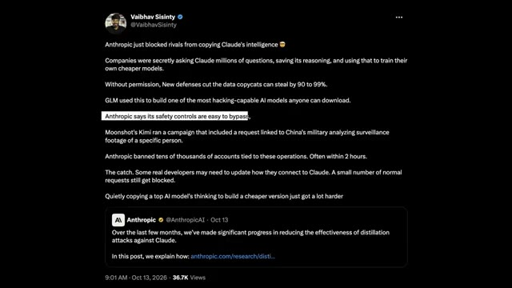
🔍 Agrandir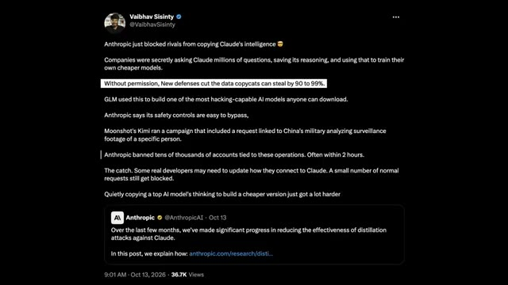
🔍 AgrandirLa course à l'intelligence artificielle ne consiste donc plus seulement à créer des modèles plus intelligents, il s'agit aussi de les protéger contre le piratage. Microsoft vient de doter Copilot d'une mise à jour majeure qui lui permet de fonctionner directement sur votre ordinateur Windows. Grâce à l'intelligence hybride, Copilot peut désormais accéder à vos fichiers, organiser des documents et accomplir des tâches sur votre PC avec votre autorisation. Par exemple, il peut effectuer des recherches dans vos fichiers, les renommer et les déplacer automatiquement dans les bons dossiers, et il ne se limite pas à l'organisation de fichiers. Vous pouvez tout simplement demander à Copilot : je viens de recevoir un e-mail de mon comptable,
Interface & Outils : Interface logicielle Microsoft Copilot et paramètres Windows.
Contenu textuel & Code : Texte "MICROSOFT COPILOT HYBRID INTELLIGENCE" et descriptions relatives aux fichiers et modèles locaux sur le PC.
Action / Démonstration : Présentation des fonctionnalités de Microsoft Copilot fonctionnant directement sur l'ordinateur Windows.
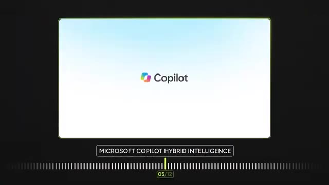
🔍 Agrandir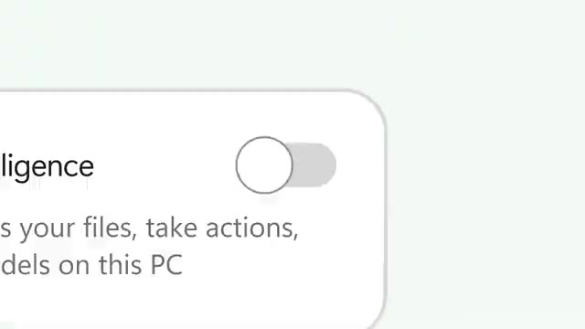
🔍 Agrandirpeux-tu m'aider avec mes impôts et lui procurer ce dont elle a besoin ? Copilot effectue des recherches sur votre ordinateur, trouve les documents requis, organise le tout dans un seul dossier et rédige un e-mail à votre comptable et, avant de l'envoyer, Copilot demande votre approbation. De plus, Copilot peut désormais exécuter des modèles d'IA directement sur votre ordinateur au lieu d'envoyer chaque tâche dans le cloud, ce qui peut rendre certaines tâches plus rapides, réduire les coûts et contribuer à garder les données sensibles sur votre appareil et, lorsqu'il a besoin de plus de puissance, il peut également utiliser des modèles d'IA en ligne, donc au lieu de se contenter de répondre à des questions, Copilot peut désormais travailler avec
Interface & Outils : Microsoft Outlook et interface de l'assistant Copilot.
Contenu textuel & Code : Brouillon d'e-mail intitulé « RE: 2025 return, a few things still needed » adressé à Grace Whitaker avec le texte « Hi Grace, Attach ».
Action / Démonstration : Démonstration de l'automatisation de la rédaction d'un e-mail par l'IA basé sur les documents fiscaux rassemblés.
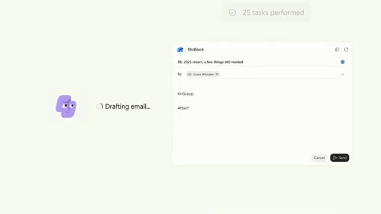
🔍 Agrandirvos fichiers et effectuer des tâches directement sur votre PC. Microsoft vient de dévoiler une nouvelle puce IA puissante pour réduire sa dépendance envers NVIDIA. Elle s'appelle Maia 100 et elle est conçue pour alimenter des outils d'IA comme Copilot et Microsoft Teams. Selon Microsoft, elle peut produire 40 % de résultats d'IA en plus avec la même quantité d'électricité que les principaux systèmes basés sur des GPU.
Interface & Outils : Matériel informatique et puces électroniques présentés en vidéo.
Contenu textuel & Code : Présentation visuelle de la nouvelle puce IA de Microsoft nommée "Maia 100".
Action / Démonstration : Présentation matérielle et visuelle du nouveau processeur IA de Microsoft pour réduire la dépendance envers NVIDIA.
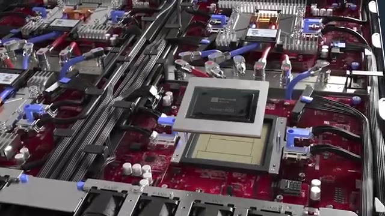
🔍 AgrandirEt avec 96 puces travaillant ensemble, elle peut délivrer jusqu'à 7 fois la production de la génération précédente. Microsoft prévoit de commencer à déployer Maya 300 en 2027. Microsoft construit donc maintenant ses propres puces pour rendre l'IA plus rapide, moins chère et plus efficace à grande échelle. L'Inde affronte les États-Unis dans la technologie vocale de l'IA.
Interface & Outils : AUCUNE
Contenu textuel & Code : AUCUNE
Action / Démonstration : AUCUNE
Savam AI vient tout juste de lancer Bulbul V4 Flash, un nouveau modèle de voix d'IA qui peut générer un discours étonnamment naturel et expressif dans de multiples langues indiennes. Il peut assurer des commentaires de cricket en anglais, des conversations sur la santé en kannada, des contes en marathi, des rappels de paiement en odia et des publicités en hindi. Il peut modifier son ton et son émotion pour s'adapter à la situation et même mélanger naturellement des langues indiennes avec l'anglais.
Interface & Outils : Présentation vidéo illustrant les capacités multilingues du modèle de voix Bulbul V4 Flash de Sarvam AI.
Contenu textuel & Code : Textes en langues indiennes (« Hindi », « Storytelling », « KANNADA VOICE BOT ») et phrases de démonstration sur la santé.
Action / Démonstration : Démonstration visuelle des différentes applications linguistiques et vocales de l'IA (contenu en hindi, bot vocal en kannada).
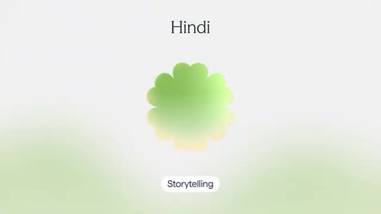
🔍 AgrandirBulbul v4 flash est désormais disponible via l'API de Sarvam avec une réduction de lancement pour une durée limitée. Anthropic vient de lancer son modèle Claude le moins cher et le plus rapide à ce jour. Il s'agit de Claude Haiku 5.5, et la plus grande surprise est de voir à quel point il est moins cher. Selon Anthropic, l'utilisation de Haiku 5.5 coûte environ 75 % de moins que celle de Haiku 4.5 en moyenne, tout en étant beaucoup plus performant, et les améliorations vont bien au-delà de la simple vitesse et du coût. Haiku 5.5 est désormais bien meilleur pour coder à l'aide d'ordinateurs et pour gérer des tâches comportant plusieurs étapes. Il est également conçu pour gérer les tâches répétitives comme
Interface & Outils : Communiqué de presse et tableau comparatif officiel au format web/diapositive.
Contenu textuel & Code : Texte d'annonce de Claude Haiku 5.5 soulignant qu'il coûte environ 75 % de moins à exécuter, et tableau de benchmarks comparant Haiku 5.5, Haiku 4.5, GPT-6 Luna et Sonnet 5.5.
Action / Démonstration : Présentation textuelle et chiffrée des nouveautés et performances du modèle Haiku 5.5.
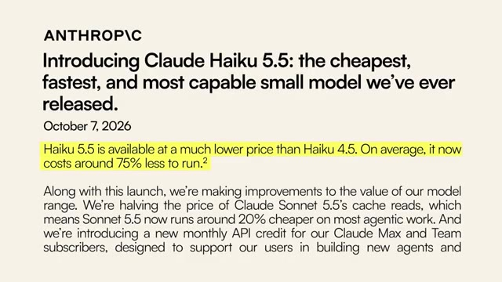
🔍 Agrandir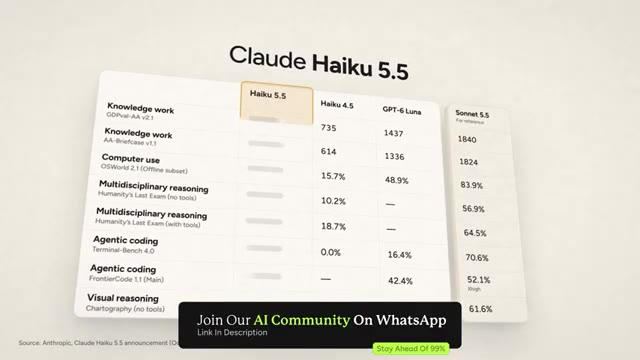
🔍 Agrandirtrier de grandes quantités d'informations et créer des résumés. Et voici ce qui est intéressant : vous pouvez désormais contrôler l'effort que Claude consacre à chaque tâche. Ainsi, pour les travaux plus simples, vous pouvez faire en sorte que ce soit rapide et économique, tandis que les tâches plus difficiles peuvent recevoir plus d'attention. Anthropic a également réduit de 50 % le coût de la réutilisation d'informations précédemment traitées avec Claude Sonnet 5.5. Haiku 5.5 est déjà disponible pour les développeurs via Anthropic, Amazon, Google et Microsoft. Ainsi, Anthropic rend l'IA non seulement plus performante, mais aussi beaucoup moins chère pour les entreprises qui ont besoin de faire tourner
Interface & Outils : Document texte et graphique comparatif Anthropic.
Contenu textuel & Code : Annonce de Claude Haiku 5.5, comparaisons de performances, prix des tokens et options d'effort.
Action / Démonstration : Présentation des spécifications, des performances et de la tarification des nouveaux modèles Anthropic.
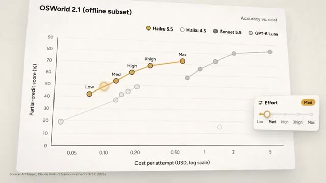
🔍 Agrandir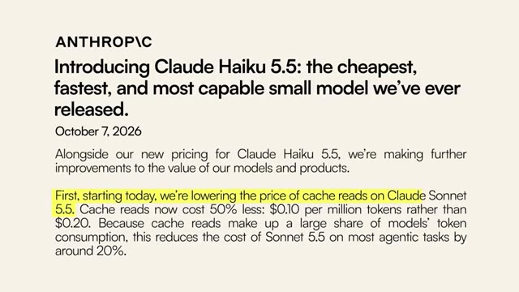
🔍 Agrandir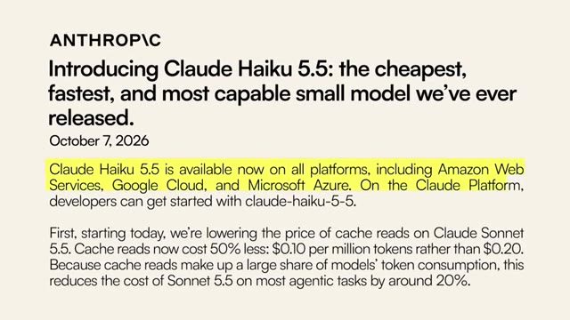
🔍 Agrandirdes milliers de tâches chaque jour. Claude peut maintenant transformer les données de votre entreprise en tableaux de bord interactifs et même en vidéos animées. Anthropic vient de lancer les tableaux de bord Claude et Claude Motion. Par exemple, disons que vous dirigez une entreprise de location de vélos et que chaque matin, certaines stations manquent de vélos. Pour comprendre pourquoi, vous connectez les données de votre entreprise à Claude. Claude analyse une année entière de données de trajet et crée un tableau de bord montrant quand les gens louent des vélos, quelles stations sont les plus fréquentées et combien de vélos il reste. Maintenant, si vous voulez expliquer
Interface & Outils : Interface web de l'outil Claude (Anthropic) intégrant un panneau de chat interactif et un tableau de bord de type SaaS.
Contenu textuel & Code : Un prompt textuel demandant de créer un tableau de bord basé sur un an de données de location de vélos, associé à des graphiques statistiques détaillés (rides per day, rides by hour, cartes).
Action / Démonstration : Démonstration de la génération automatique d'un tableau de bord interactif par l'intelligence artificielle Claude à partir d'une requête textuelle.
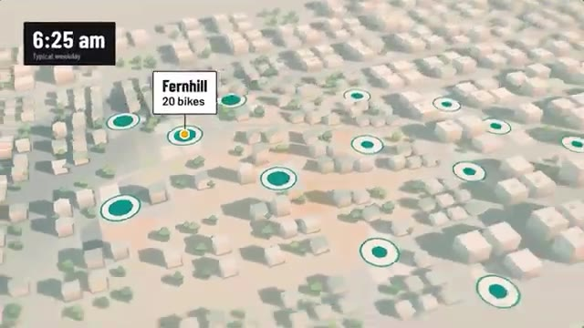
🔍 Agrandir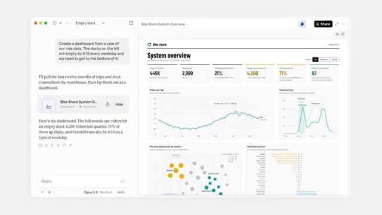
🔍 Agrandirce qui se passe lors de votre prochaine réunion d'équipe, vous pouvez simplement sélectionner un graphique et demander à Claude de le transformer en animation. Claude crée ensuite une vidéo montrant comment les vélos se déplacent dans la ville tout au long de la matinée. Vous pouvez même laisser des commentaires directement sur la vidéo, comme « montrer la station de vélos vide un peu plus longtemps », et Claude effectue la modification. Vos coéquipiers peuvent également laisser des commentaires et vous pouvez exporter l'animation terminée vers vos outils de conception.
Interface & Outils : Interface SaaS de création de visualisations et vidéos animées (style outil de présentation IA type Claude Artifacts / Motion).
Contenu textuel & Code : Graphiques de trafic de vélos, animations de cartes urbaines en 3D, et commentaires d'utilisateurs (Sam, Dev, Nate).
Action / Démonstration : Démonstration de la transformation d'un graphique de données en animation vidéo fluide avec des retours d'équipe interactifs.
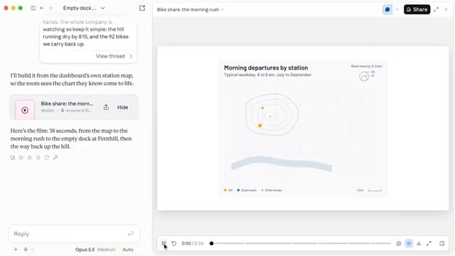
🔍 Agrandir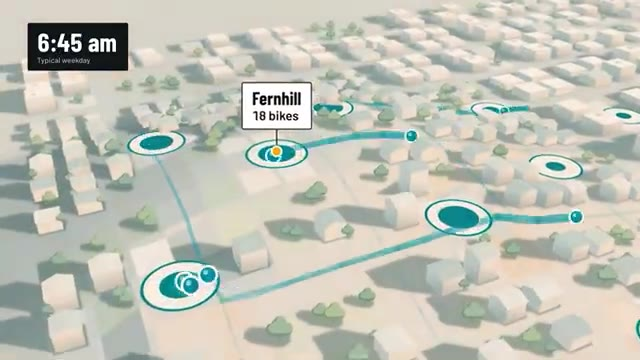
🔍 Agrandir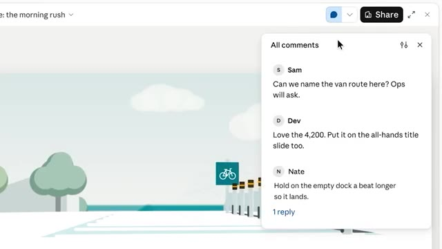
🔍 AgrandirDonc, au lieu de guider votre équipe à travers des graphiques compliqués, vous pouvez maintenant leur montrer exactement ce qui se passe grâce à une simple vidéo animée. Google vient de lancer un nouvel agent IA qui peut travailler comme toute une équipe au sein de votre entreprise. Il s'appelle l'agent One et, contrairement à un chatbot classique, il peut comprendre votre travail, se connecter à vos applications et continuer à travailler 24h/24 et 7j/7, même lorsque vous n'êtes pas là. Vous pouvez télécharger une demande de proposition commerciale et simplement demander à Gemini de la compléter. Gemini lit le document, comprend ce qui doit être fait, élabore un plan et demande
Interface & Outils : Interface utilisateur minimaliste d'un agent IA ou d'un assistant documentaire.
Contenu textuel & Code : Un document PDF intitulé "Request for Proposal" et un prompt débutant par "Complete the attached".
Action / Démonstration : Saisie d'une instruction textuelle pour interagir avec un document au sein d'une interface d'agent IA.
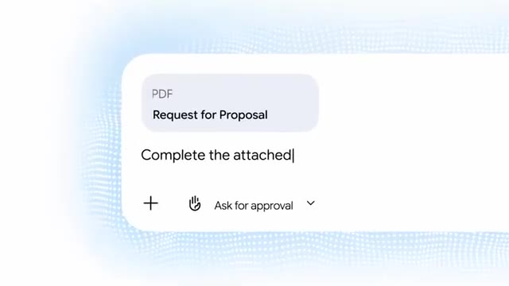
🔍 Agrandirapprobation avant de commencer. Une fois approuvé, Gemini crée plusieurs agents IA pour s'occuper de différentes parties du travail. L'un vérifie les dossiers des clients, un autre effectue des recherches sur le web, et un autre examine les exigences de l'entreprise. Tous ces agents travaillent ensemble pendant que Gemini coordonne le tout, et le travail continue en arrière-plan. Le lendemain matin, le projet terminé est prêt.
Interface & Outils : Interface graphique de gestion d'agents IA (workflow builder).
Contenu textuel & Code : Blocs interactifs nommés "CRM Agent" et "Web Search Agent" avec des étiquettes "Subagent".
Action / Démonstration : Présentation visuelle et dynamique du fonctionnement de différents agents IA spécialisés interconnectés.
Vous pouvez l'utiliser à travers des outils comme Gmail, Google Drive, Slack et d'autres applications professionnelles. Google vous permet également de choisir entre différents modèles d'IA, y compris Gemini et Claude, selon la tâche. Et les entreprises bénéficient de contrôles de sécurité pour décider à quoi l'IA peut accéder et quelles actions nécessitent une approbation humaine.
Interface & Outils : Interface de type interface logicielle / outil professionnel, menu déroulant avec option "Auto".
Contenu textuel & Code : Texte « with enterprise-grade security and governance » et options d'IA.
Action / Démonstration : Navigation à travers différentes applications et sélection du mode automatique pour les modèles d'IA.
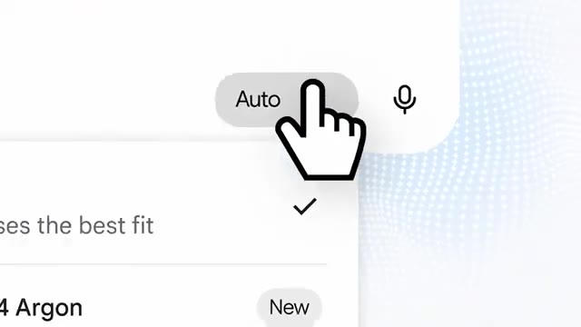
🔍 AgrandirDonc, au lieu de donner des instructions à l'IA pour chaque petite tâche, vous pouvez désormais confier à Gemini un travail entier et le laisser coordonner le travail pour vous. Anthropic vient de lancer une nouvelle initiative pour protéger certains des systèmes les plus importants au monde contre les cyberattaques. Elle s'appelle l'Anthropic Cyber Mission, et elle se concentre sur deux grands domaines.
Interface & Outils : Site web d'Anthropic (page d'accueil ou blog dédié à la mission cyber).
Contenu textuel & Code : Texte affiché : "Introducing the Anthropic Cyber Mission" et un visuel abstrait aux tons pastels, typique des présentations institutionnelles d'Anthropic.
Action / Démonstration : Le présentateur commente le lancement d'une nouvelle initiative de sécurité cyber par Anthropic, illustrée par la transition vers la page web dédiée.
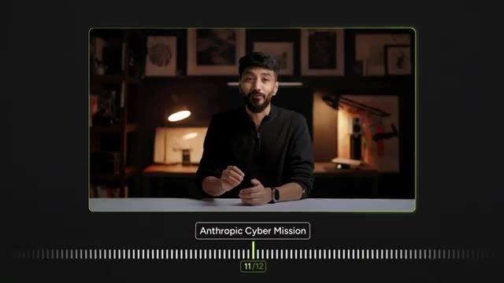
🔍 AgrandirPremièrement, Anthropic travaille avec des entreprises comme CrowdStrike, Deloitte et Palo Alto Networks pour aider à sécuriser les réseaux électriques, les systèmes d'eau, les usines et les réseaux de transport. Claude aidera les équipes de sécurité à trouver et à corriger les faiblesses avant que les attaquants ne puissent les exploiter. Deuxièmement, Anthropic a lancé OSS Scanner, un outil gratuit qui vérifie régulièrement les logiciels open source à la recherche de problèmes de sécurité.
Interface & Outils : Document texte / Article de blog institutionnel (Anthropic)
Contenu textuel & Code : Texte officiel sur le lancement d'Anthropic Cyber Mission, mentionnant le Critical Infrastructure Defense Program, des partenaires (CrowdStrike, Deloitte, Palo Alto Networks) et OSS Scanner.
Action / Démonstration : Le présentateur commente le communiqué officiel d'Anthropic sur les nouveaux programmes de cybersécurité.
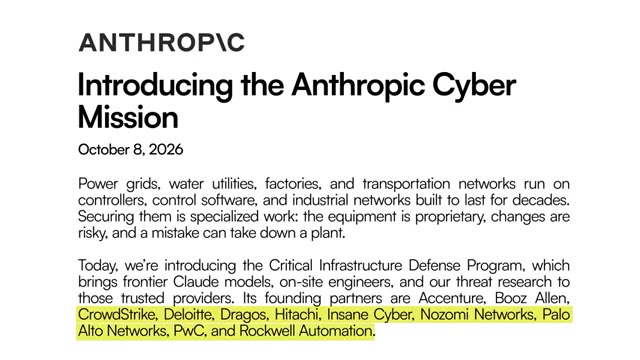
🔍 Agrandir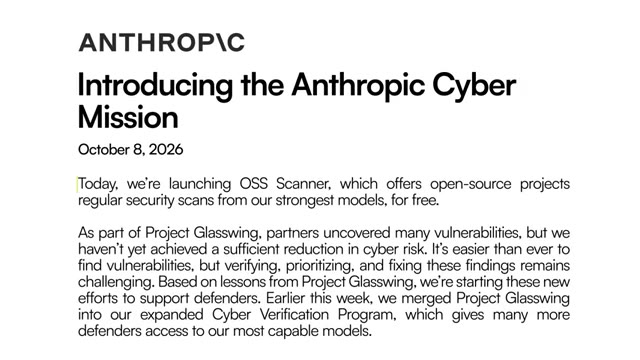
🔍 AgrandirIl peut identifier des faiblesses potentielles, expliquer comment elles pourraient être exploitées et suggérer des corrections. Les rapports sont générés par IA, ils ont donc toujours besoin d'être vérifiés. Ainsi, Anthropic utilise désormais Claude pour aider à protéger l'infrastructure et les logiciels dont les gens dépendent chaque jour. Alibaba a trouvé un moyen d'entraîner des agents d'IA sans gaspiller autant de puissance de calcul.
Interface & Outils : Vidéo explicative avec graphismes animés.
Contenu textuel & Code : Diagramme arborescent représentant une structure cybernétique ou un réseau de données.
Action / Démonstration : Animation graphique illustrant le sujet de la cybersécurité avec Claude d'Anthropic.
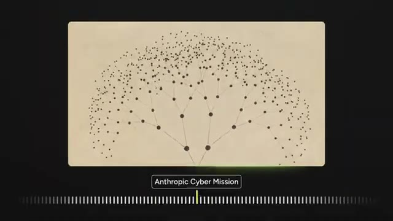
🔍 AgrandirÇa s'appelle QuenJaya. Pensez-y comme à une façon plus intelligente de gérer les ordinateurs qui apprennent aux agents d'IA à accomplir des tâches complexes. Lorsqu'un agent d'IA est en train d'être entraîné, il peut avoir besoin de différentes quantités de puissance de calcul à différentes étapes. Khenjaya peut réattribuer ces ressources pendant que l'entraînement est toujours en cours, au lieu de les laisser se gaspiller.
Interface & Outils : Twitter (X)
Contenu textuel & Code : Post de Qwen détaillant QwenGyre, un outil d'apprentissage par renforcement élastique pour agents d'IA, avec un schéma des fonctionnalités clés (Elastic GPU Scheduling, Trajectory Processing).
Action / Démonstration : Affichage d'une publication officielle sur les réseaux sociaux pour illustrer les détails techniques présentés oralement.
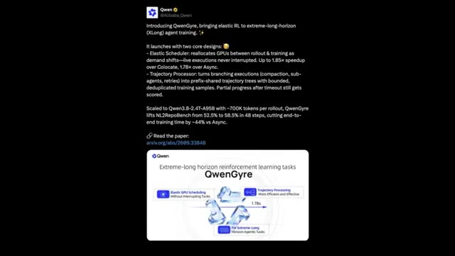
🔍 AgrandirIl aide également à réduire le travail répété lorsqu'un agent explore différentes manières de résoudre un problème. Lors des tests d'Alibaba, cette approche a réduit le temps d'entraînement d'environ 44 % et a amélioré les performances sur un test de codage. En termes simples, QuenJaya aide les agents IA à apprendre plus efficacement en utilisant moins de temps et de puissance de calcul.
Interface & Outils : Capture d'écran d'un tweet sur la plateforme Twitter/X.
Contenu textuel & Code : Texte du tweet présentant QwenGyre (Elastic Scheduler, Trajectory Processor) et ses performances par rapport à Async.
Action / Démonstration : Le créateur montre un article et une annonce officielle d'Alibaba sur QwenGyre pour illustrer les performances d'entraînement des agents.
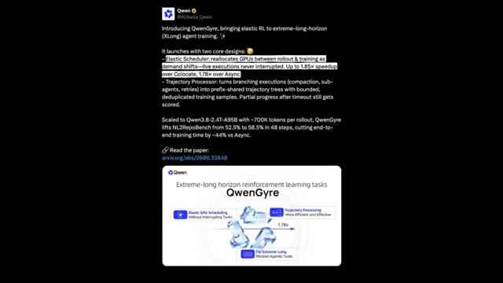
🔍 AgrandirGoogle est de retour avec Gemini 4 Argon. Mais peut-il réellement battre Claude ? Google affirme qu'il s'agit de l'un de ses modèles d'IA les plus puissants à ce jour, avec des améliorations majeures en matière de programmation, de raisonnement et de gestion de tâches complexes. Et si l'on regarde les démonstrations de Google, les résultats sont plutôt impressionnants. Mais nous avons déjà vu cela auparavant. Chaque nouveau modèle d'IA est lancé avec des démonstrations incroyables et des scores de référence.
Interface & Outils : Site web d'actualités (CNBC).
Contenu textuel & Code : Article de presse mentionnant le lancement de Gemini 4 Argon par Alphabet et ses performances en programmation, cybersécurité et tâches professionnelles complexes.
Action / Démonstration : Le présentateur illustre ses propos en affichant un article de presse majeur sur l'annonce du modèle Gemini 4 Argon.
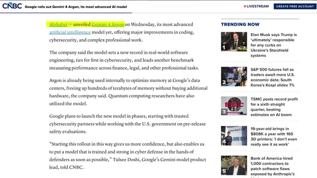
🔍 Agrandir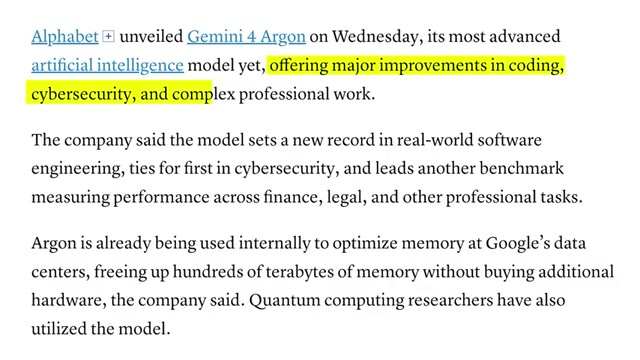
🔍 AgrandirEt presque chaque entreprise prétend que son modèle est le meilleur. Alors, que se passe-t-il lorsque l'on confie à ces modèles les mêmes tâches du monde réel ? C'est exactement ce que nous allons découvrir. Nous avons testé Gemini 4 Argon sur plusieurs projets et avons donné à Claude les mêmes instructions pour voir comment leurs résultats se comparent. Et nous ne nous contentons pas de vérifier s'ils peuvent accomplir une tâche.
Interface & Outils : Interface de développement et site web interactif de présentation automobile.
Contenu textuel & Code : Code source, structure de projet, invites de création de simulation de Rubik's Cube et interface web de design automobile Jaguar.
Action / Démonstration : Navigation dans l'interface de programmation et démonstration d'un projet web interactif de design automobile.
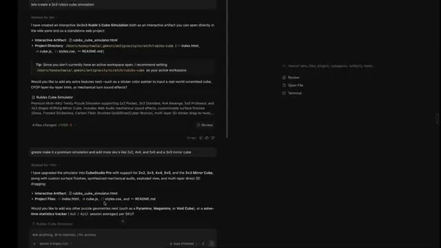
🔍 Agrandir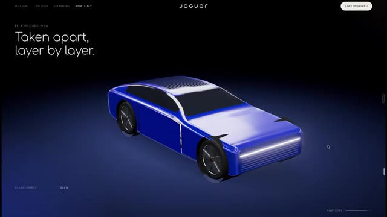
🔍 AgrandirNous examinons le design, la fonctionnalité, les petits détails et si vous auriez réellement envie d'utiliser ce qu'ils créent. Parce qu'un modèle peut sembler incroyable sur un benchmark et pourtant peiner quand vous lui confiez du vrai travail. À la fin, vous saurez où se situe Gemini par rapport à Claude et quel modèle a le plus de sens pour votre travail. Je partagerai également tous les prompts dans notre communauté WhatsApp gratuite Staying Ahead, le lien est dans la description.
Interface & Outils : Applications web interactives créées par des modèles d'IA (interfaces utilisateur de type dashboard ou simulateur 3D).
Contenu textuel & Code : Éléments d'interface utilisateur, maquettes de sites web (Jaguar), simulateur de Rubik's Cube 3D et tableaux de bord de contrôle.
Action / Démonstration : Comparaison comparative des performances de design et de fonctionnalité entre Gemini et Claude.
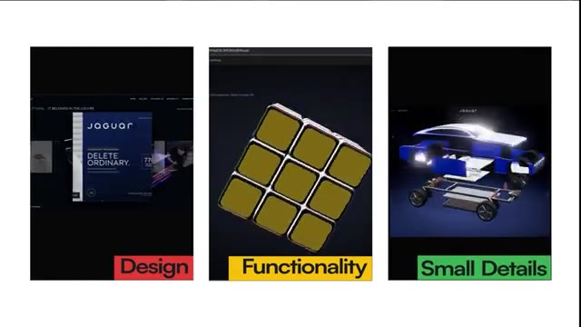
🔍 Agrandir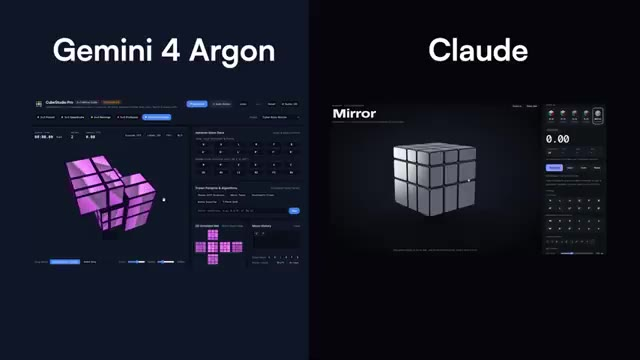
🔍 AgrandirMais avant de passer à notre test, Google a présenté quelque chose avec Gemini 4 Argon qui vaut la peine qu'on y regarde de plus près. Google montre un robot humanoïde en train d'apprendre à jouer au cornhole, un jeu où l'on lance des sacs de haricots dans un trou sur une planche. Des chercheurs ont d'abord montré au robot une vidéo d'une personne effectuant le lancer. Gemini étudie le mouvement, puis utilise les caméras du robot pour déterminer exactement où se trouve la planche.
Interface & Outils : Interface de simulation robotique et tableaux de bord de télémétrie technique (MuJoCo).
Contenu textuel & Code : Courbes de télémétrie, angles d'articulation, vitesses angulaires et graphiques de stabilité dynamique pour le robot humanoïde.
Action / Démonstration : Démonstration d'apprentissage du jeu de cornhole par un robot humanoïde à partir d'exemples humains et analyse de données cinématiques.
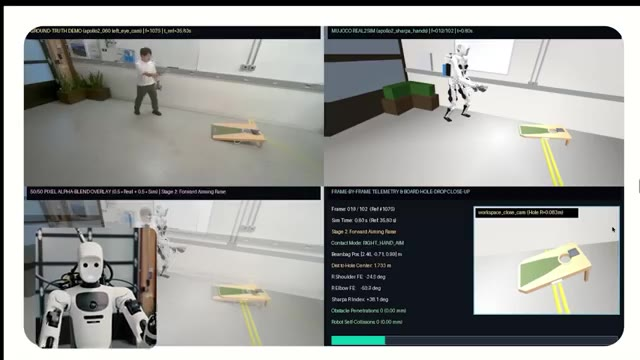
🔍 Agrandir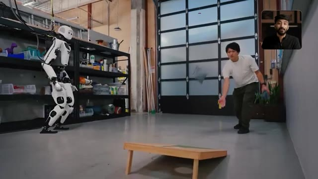
🔍 Agrandir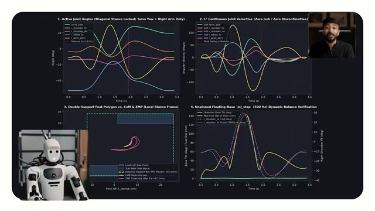
🔍 AgrandirEnsuite, il s'entraîne à l'intérieur de Mujoco, un simulateur qui lui permet de tester différents mouvements avant de les essayer dans le monde réel. Après chaque lancer, il vérifie où le sac a atterri, analyse ce qui n'a pas fonctionné et ajuste la tentative suivante. Dans la démonstration de Google, le robot finit par réussir 7 tirs d'affilée.
Interface & Outils : Simulateur physique MuJoCo (Multi-Joint dynamics with Contact).
Contenu textuel & Code : Superposition d'interfaces de simulation avec des métadonnées techniques (telles que "Translucent Convex Hulls", "Stage 7: Upright Stance Recovery") et captures vidéo en temps réel du robot.
Action / Démonstration : Démonstration de l'entraînement robotique : transition de la simulation numérique (MuJoCo) vers l'exécution physique réelle pour optimiser la précision du lancer.
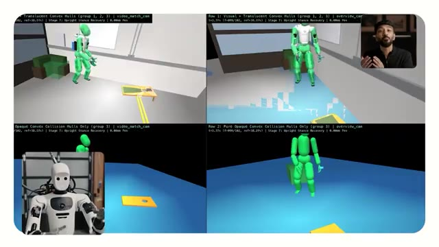
🔍 Agrandir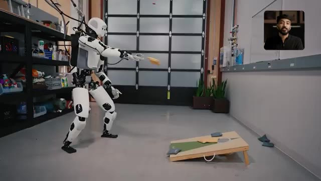
🔍 Agrandir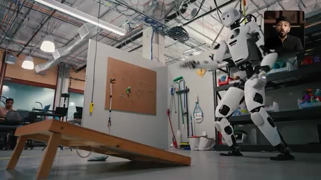
🔍 AgrandirLa partie intéressante est la façon dont Gemini combine ce qu'il voit dans une vidéo avec de la pratique et des retours. Et Google a montré le même modèle en train de créer des projets visuels très différents. Sur le site Web de Google, vous pouvez voir des pagodes 3D générées par du code, un circuit de course, un échiquier, une pièce et une architecture gothique détaillée. Sa fiche technique couvre également l'ingénierie, la finance, le travail juridique et la cybersécurité. Et il prend en charge jusqu'à 1 million de jetons entre l'entrée et la sortie, ce qui lui laisse la place de traiter une quantité énorme d'informations. Les résultats des benchmarks sont solides,
Interface & Outils : Navigateur web affichant le blog officiel de Google ("Google India Blog") concernant Gemini 4 Argon.
Contenu textuel & Code : Textes explicatifs sur les capacités de raisonnement spatial, l'optimisation de code Rust/SIMD, et mise en évidence en surbrillance jaune du chiffre "1M tokens".
Action / Démonstration : Démonstration visuelle de projets 3D générés par l'IA et présentation textuelle des avancées techniques du modèle.
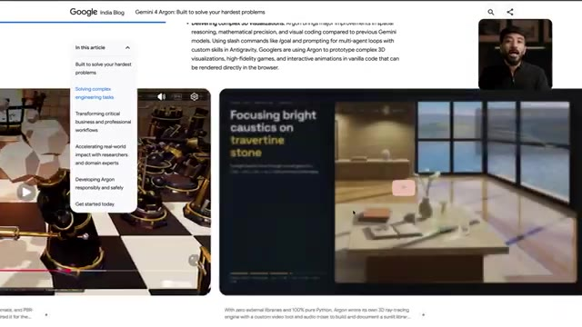
🔍 Agrandir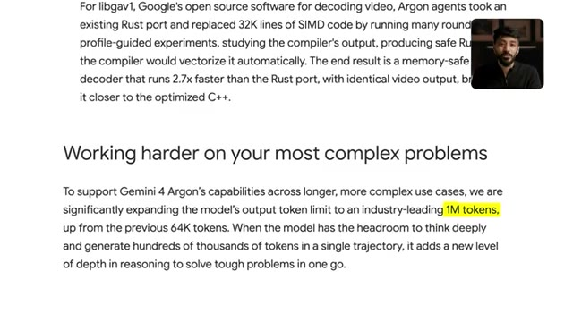
🔍 Agrandirbien que Gemini ne soit pas en tête de tous les tests, y compris Frontier SWE et Terminal Bench dans la comparaison de Google. Mais au lieu de passer tout notre temps sur des graphiques, ouvrons l'outil et testons les résultats réels. Pour ces projets, nous utilisons l'espace de travail anti-gravité de Google. Ouvrez le menu des modèles, sélectionnez Gemini 4 Argon, et vous verrez des paramètres d'effort faible, moyen et élevé. Nous avons utilisé le niveau élevé pour les tests de Gemini, alors commençons par un projet qui nécessite à la fois un bon design et des commandes fonctionnelles.
Interface & Outils : Interface de l'outil logiciel ou espace de travail présenté. [DESC_IMAGE_2] Boîte de dialogue et de recherche avec les options "Gemini 4 Argon High" et "Auto [Preview]".
Contenu textuel & Code : Explications orales, astuces de productivité et méthodologie IA.
Action / Démonstration : Présentation de l'interface logicielle et ouverture de l'outil pour tester ses fonctionnalités en direct.
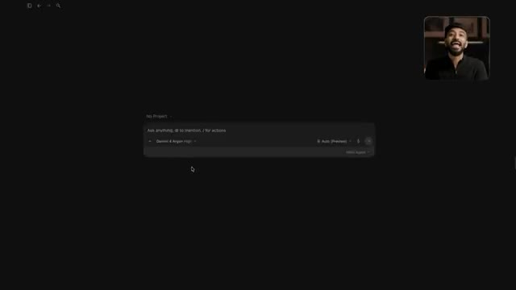
🔍 AgrandirTout d'abord, nous avons demandé à Gemini de construire un Rubik's Cube interactif. Ouvrons le projet terminé appelé Cube Studio Pro. Vous pouvez basculer entre les puzzles 2x2, 3x3, 4x4, 5x5 et le cube miroir, il y a aussi un menu de finitions avec des options comme l'or brossé, la fibre de carbone et le cyber rose. Maintenant, cliquons sur Mélanger puis essayons la résolution automatique. Vous pouvez ouvrir une vue 2D à plat, vérifier l'historique des mouvements et choisir des motifs prédéfinis. Il a même une vue éclatée qui sépare les pièces ainsi que des commandes pour le zoom et l'animation.
Interface & Outils : Interface de développement de type IDE/chat IA et application web interactive (Cube Studio Pro).
Contenu textuel & Code : Prompts de création de simulateur, description du projet Cube Studio Pro avec fichiers générés (HTML, JS, CSS) et interface de contrôle avec mouvements et historique.
Action / Démonstration : Présentation du projet terminé et de l'interface interactive du simulateur de cube.
vitesse. Vous avez donc plusieurs façons différentes de jouer avec le cube. Maintenant, ouvrons la version de Claude pour la même tâche. Vous obtenez différentes tailles de cube et, si vous regardez les textures et écoutez les effets sonores, le cube semble beaucoup plus réaliste. Vous pouvez également le mélanger et le résoudre, suivre vos mouvements et votre temps, et basculer entre les finitions argentée et dorée pour le cube miroir. Gemini vous offre donc plus d'options de personnalisation, tandis que la version de Claude a l'air et se sent plus aboutie. Mais peuvent-ils construire quelque chose qui se joue sans que vous le contrôliez ? Ensuite, nous avons demandé à Gemini de créer un jeu de dinosaure de style chrome qui se joue
Interface & Outils : Cube Studio (application web interactive de résolution de cubes)
Contenu textuel & Code : Interface utilisateur avec un cube 3D interactif monochrome gris, des boutons de contrôle (Scramble, Solve, Undo, Reset), un chronomètre à 0.00 et des options de notation WCA.
Action / Démonstration : Le présentateur démontre la version 'Mirror' du cube virtuel en montrant les différentes tailles de pièces et les textures réalistes.
lui-même avec un thème Windows rétro. Exécutons le projet existant localement. Il s'appelle Cyber Rex Pixels et vous pouvez voir le dinosaur se déplaçant dans un environnement de pixel art coloré. Sur la droite, il y a un panneau de style gestionnaire de tâches avec un graphique de réseau de neurones, des commandes de réglage et des journaux affichant les décisions du jeu.
Interface & Outils : Interface du jeu Cyber Rex Pixels, style gestionnaire de tâches Windows, panneau de réseau de neurones.
Contenu textuel & Code : Graphiques de réseaux de neurones, scores de jeu, options de personnalisation et thèmes rétro.
Action / Démonstration : Démonstration en direct du jeu Cyber Rex Pixels fonctionnant localement avec un panneau de contrôle de réseau de neurones actif.
Vous pouvez augmenter la vitesse jusqu'à 16x, basculer entre le mode pilote automatique et manuel, et ajuster la musique, les effets sonores et les couleurs. Maintenant, ouvrons la version de Claude, Nebula Runner. Elle présente un thème spatial plus sombre, un mode de jeu automatique, un compteur de score et des paramètres de vitesse. Et regardez ce qui se passe lorsque vous fermez la fenêtre. Vous obtenez les options veille, éteindre et redémarrer, et la sélection du redémarrage lance une animation de démarrage rétro. Les deux versions sont jouables, mais Gemini offre davantage de commandes de jeu tandis que Claude ajoute plus de personnalité à l'interface. Maintenant, essayons quelque chose que vous pourriez réellement
Interface & Outils : Interface web de développement et interface du jeu Nebula Runner.
Contenu textuel & Code : Notes de design, explications des modifications UX, et interface du jeu spatial avec mode pilote automatique.
Action / Démonstration : Présentation des modifications et démonstration du jeu Nebula Runner.
à utiliser lors de la création de contenu. Nous avons donné à Gemini un montage de référence et des images d'un présentateur généré par IA qui parle de Neuralink. L'objectif était de créer une vidéo verticale dans un style de montage similaire. Ouvrons le fichier terminé. Vous verrez des écrans partagés, des sous-titres animés, du texte incrusté et des graphiques animés qui apparaissent en même temps que la narration. Lissons maintenant la version de Claude en utilisant le même matériel. Elle ajoute des images de soutien, du texte animé et des transitions qui suivent ce que dit le présentateur. Les deux vous donnent de premiers montages utiles. Vous voudriez quand même vérifier le timing et les détails avant de publier, mais il est intéressant de voir à quel point
Interface & Outils : Interface de lecteur vidéo et éditeur de code/notes.
Contenu textuel & Code : Texte descriptif détaillant le montage vidéo, le script, les logos de Neuralink et xAI, et des sous-titres.
Action / Démonstration : Présentation du fichier vidéo terminé et lecture de l'extrait vertical avec des superpositions graphiques.
de l'édition que chaque modèle a gérée et si vous pensez que le design compte dans une courte vidéo, il compte encore plus sur notre prochain projet, cherchons Jaguar Type 00 et ouvrons le site officiel, ce concept-car futuriste est notre référence de design, nous avons demandé à Gemini de créer un site web à défilement où une version 3D de la voiture se déplace lorsque vous faites défiler, maintenant ouvrons ce qu'il a construit, vous obtenez des sections animées, une voiture en rotation, une vue éclatée et des informations sur les matériaux.
Interface & Outils : Navigateur web affichant le site officiel de Jaguar (jaguar.com).
Contenu textuel & Code : Présentation du modèle "Jaguar Type 00", avec le texte "An original work of art" et une vue 3D éclatée du véhicule.
Action / Démonstration : Navigation sur le site officiel de Jaguar pour présenter le design futuriste du concept-car Type 00.
Le défilement est fluide mais la voiture 3D n'a pas l'air tout aussi convaincante que l'originale. Maintenant, ouvrons la version de Claude, également créée avec un effort élevé. La Jaguar bleue a l'air plus détaillée et, au fur et à mesure que vous faites défiler, vous voyez les roues, les options de couleur, les portes papillon et l'animation de vue éclatée. L'éclairage, la typographie et le design global semblent plus cohérents, donc Claude produit le site Web le plus impressionnant dans ce test.
Interface & Outils : Navigateur web présentant le site interactif de Jaguar avec un modèle 3D.
Contenu textuel & Code : Texte du site Jaguar ("Not an evolution. A redrawing.", "Taken apart, layer by layer.") et annotations techniques des composants.
Action / Démonstration : Navigation et défilement à travers le site web interactif pour explorer le modèle 3D de la voiture en vue éclatée.
Mais avant de désigner un vainqueur pour l'ensemble, il convient d'examiner le coût pour obtenir ces résultats. Sur le graphique d'analyse artificielle présenté ici, Gemini obtient un score d'environ 53 sur l'indice d'intelligence, contre environ 58 pour le modèle Claude Opus présenté. Il y a aussi une comparaison de vitesse, bien que le graphique ne nous donne pas une comparaison claire entre tous les modèles dont nous discutons.
Interface & Outils : Site web d'analyse comparative d'intelligence artificielle (Artificial Analysis).
Contenu textuel & Code : Graphiques de performance des modèles d'IA (Claude Opus, Gemini 4 Argon, etc.) évaluant l'intelligence, la vitesse et le coût par tâche.
Action / Démonstration : Navigation et survol d'un graphique comparatif de modèles d'IA sur le web.
Mais quand on regarde le coût par tâche, Gemini est moins cher que plusieurs modèles de premier plan. Le meilleur choix dépend donc de la qualité du résultat, de la rapidité avec laquelle vous en avez besoin et de ce que cela coûte à produire. Il y a un test de plus et cette fois, nous sortons du navigateur. Pour le projet final, nous avons connecté Gemini à Blender via MCP, ce qui permet à l'IA de travailler directement avec le logiciel.
Interface & Outils : Navigateur web avec interface textuelle et de code, intégrant une vignette vidéo du présentateur.
Contenu textuel & Code : Texte descriptif technique et code (« Key Highlights & Architecture », « Top-to-Bottom Scrollytelling & 60fps 3D Stage ») concernant un projet web Jaguar.
Action / Démonstration : Présentation et analyse d'un cas pratique ou d'un code généré pour un projet web interactif.
Nous avons utilisé cette photo de référence d'un homme la bouche ouverte et avons demandé à Gemini d'en faire un modèle 3D. Ouvrons maintenant Blender et comparons le résultat avec la photo originale. Ce qui est utile, c'est qu'il s'agit d'un véritable modèle 3D que vous pouvez continuer à modifier, et pas seulement d'une image générée. Vous pourriez le préparer pour l'impression 3D, bien que l'enregistrement ne montre pas d'impression physique.
Interface & Outils : Interface de Blender, interface d'un outil IA de génération 3D.
Contenu textuel & Code : Texte descriptif de la sculpture faciale : "Expressive Facial Anatomy (Screaming_Head, Sculpted_LashLines, Sculpted_Eyebrows)".
Action / Démonstration : Présentation du modèle 3D finalisé généré et affiché dans le logiciel Blender.
Donc, après tous ces projets, quel modèle devriez-vous réellement utiliser ? Après ces tests, vous pouvez voir pourquoi il vaut la verrez de juger les modèles par ce qu'ils créent, plutôt que simplement par ce que leurs pages de benchmarks promettent. Gemini gère plusieurs types de projets, tandis que Claude offre le site web de Jaguar le plus esthétique dans cette comparaison. Donc, au lieu de choisir un modèle pour tout, comparez les résultats et choisissez celui qui fonctionne le mieux pour votre tâche.
Interface & Outils : Interface de développement ou navigateur affichant du code et des détails de projet (Luxury Jaguar Scroll Animation Website).
Contenu textuel & Code : Spécifications techniques et notes sur les animations CSS, les couches de composants et les éléments interactifs d'un site web, avec une petite fenêtre vidéo du présentateur en haut à droite.
Action / Démonstration : Présentation d'un projet de développement web et analyse de code à l'écran.
Vous pouvez retrouver tous les prompts et ressources dans notre communauté WhatsApp gratuite Staying Ahead. Le lien est dans la description. Et si vous voulez explorer davantage ce que les derniers modèles d'IA peuvent faire, regardez cette vidéo ensuite. Enfin, environ 70 % des personnes qui regardent ces vidéos ne sont toujours pas abonnées. Alors, si vous voulez garder une longueur d'avance grâce aux dernières actualités et tutoriels sur l'IA, cliquez sur ce bouton d'abonnement.
Interface & Outils : Application mobile WhatsApp, navigateur affichant YouTube.
Contenu textuel & Code : Texte incitant à rejoindre la communauté WhatsApp 'Staying Ahead' avec des documents partagés (Prompts, Resources).
Action / Démonstration : Promotion de la communauté WhatsApp et suggestion de vidéos complémentaires à regarder ensuite.
À la prochaine dans la vidéo.
Interface & Outils : Écran de fin YouTube avec éléments graphiques textuels et QR code.
Contenu textuel & Code : "SUBSCRIBE", "Stay ahead in the AI first world", "Scan to join the Global AI WhatsApp Community", handle "@vaibhavsisinty".
Action / Démonstration : Conclusion de la vidéo et affichage de l'appel à l'action final.